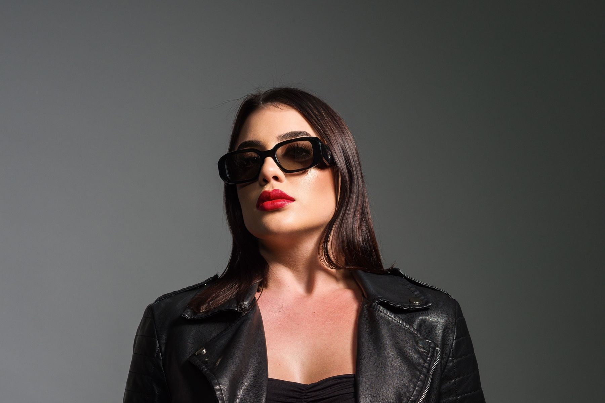
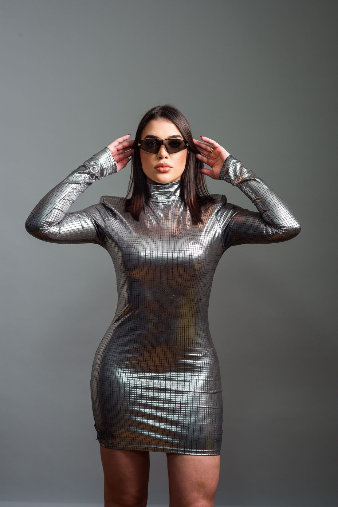
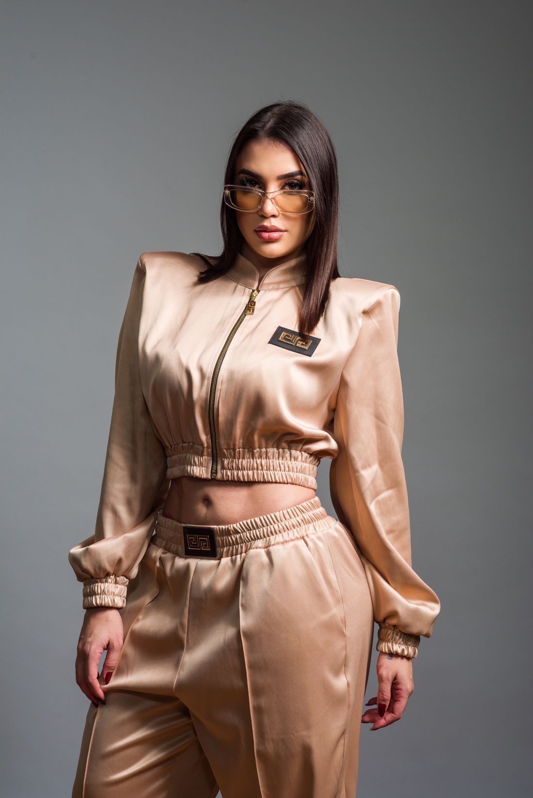
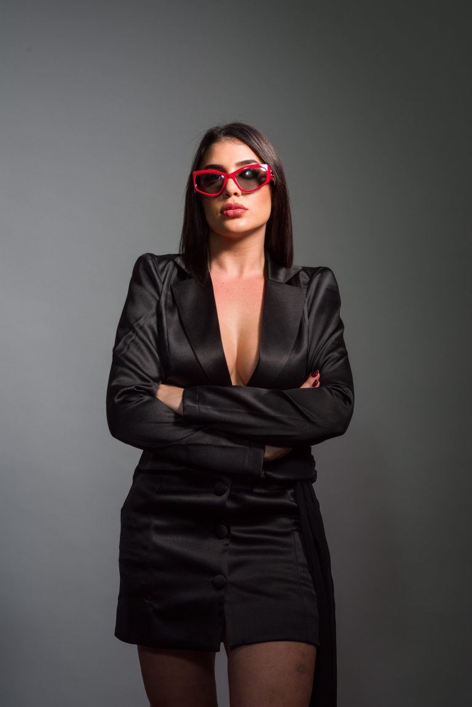
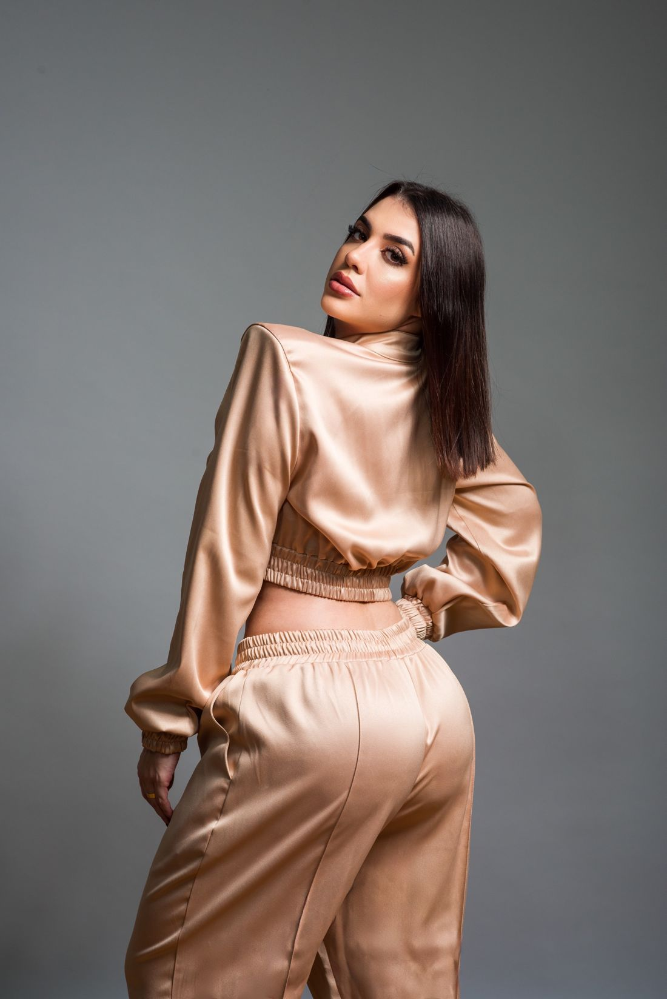
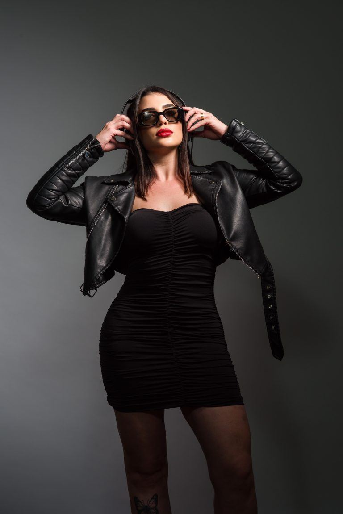
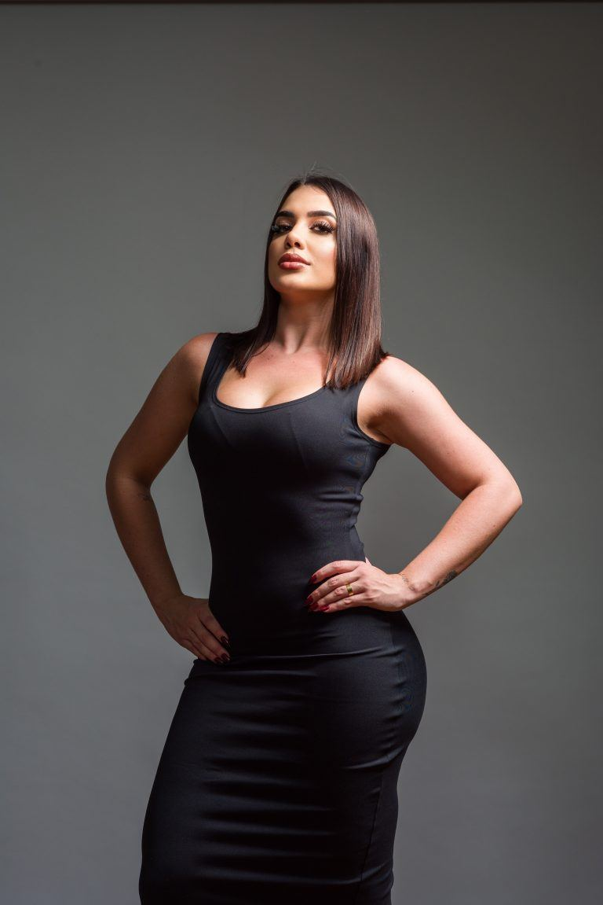

<title>Bárbara Thomaz — Site</title>
<meta name="claude:viewport-fit-sides" content="cover">
<link rel="preconnect" href="https://fonts.googleapis.com">
<link rel="preconnect" href="https://fonts.gstatic.com" crossorigin>
<link rel="stylesheet" href="https://fonts.googleapis.com/css2?family=Archivo:wdth,wght@62..125,300..800&family=Instrument+Sans:wght@400;500;600&family=JetBrains+Mono:wght@400;500&display=swap">
<style>
/* Layout: editorial noturno. Foto grande à direita, texto em coluna estreita, muito respiro; violeta só como luz. Tema único escuro por escolha. */
:root{
  --ink:#0B0A10;      /* preto profundo */
  --ink-2:#14121C;    /* superfície */
  --line:#2A2635;     /* divisores */
  --paper:#F2F0F5;    /* branco suave */
  --mute:#A29DB0;     /* texto secundário */
  --violet:#9B5DE5;   /* acento / luz */
  --lav:#C9B8E8;      /* lavanda clara */
  --display:"Archivo","Arial Narrow",Helvetica,sans-serif;
  --body:"Instrument Sans","Segoe UI",Helvetica,Arial,sans-serif;
  --mono:"JetBrains Mono",ui-monospace,Consolas,monospace;
  --gut:max(16px,env(safe-area-inset-left,0px));
  --gut-r:max(16px,env(safe-area-inset-right,0px));
  color-scheme:dark;
}
*{box-sizing:border-box}
html{scroll-behavior:smooth}
body{background:var(--ink);color:var(--paper);font-family:var(--body);font-size:17px;line-height:1.6;-webkit-font-smoothing:antialiased;overflow-x:hidden}
body::before{content:"";position:fixed;inset:0 0 auto;height:env(safe-area-inset-top,0px);z-index:60;background:var(--ink)}
a{color:inherit}
img{display:block;max-width:100%;height:auto}
:focus-visible{outline:2px solid var(--lav);outline-offset:3px;border-radius:2px}
.wrap{max-width:1240px;margin-inline:auto;padding-left:var(--gut);padding-right:var(--gut-r)}

/* ---------- tipografia ---------- */
.eyebrow{font-family:var(--mono);font-size:12px;letter-spacing:.18em;text-transform:uppercase;color:var(--lav)}
h2{font-family:var(--display);font-stretch:112%;font-weight:600;font-size:clamp(34px,5.2vw,64px);line-height:1.02;letter-spacing:-.01em;margin:0;text-wrap:balance}
h3{font-family:var(--display);font-stretch:105%;font-weight:600;font-size:20px;margin:0;line-height:1.2}
p{margin:0}
.lead{font-size:clamp(18px,1.6vw,20px);color:var(--paper);max-width:58ch}
.muted{color:var(--mute)}

/* ---------- botões ---------- */
.btn{display:inline-flex;align-items:center;gap:.6em;font-family:var(--display);font-stretch:110%;font-weight:600;font-size:14px;letter-spacing:.08em;text-transform:uppercase;text-decoration:none;padding:15px 24px;border:1px solid var(--paper);min-height:48px;transition:background .25s,color .25s,border-color .25s}
.btn--solid{background:var(--paper);color:var(--ink)}
.btn--solid:hover{background:var(--lav);border-color:var(--lav)}
.btn--ghost{color:var(--paper);border-color:color-mix(in srgb,var(--paper) 40%,transparent)}
.btn--ghost:hover{border-color:var(--paper);background:color-mix(in srgb,var(--paper) 8%,transparent)}
.btn svg{width:16px;height:16px;flex:none}
.actions{display:flex;flex-wrap:wrap;gap:12px}

/* ---------- topo ---------- */
.top{position:sticky;top:env(safe-area-inset-top,0px);z-index:50;background:color-mix(in srgb,var(--ink) 82%,transparent);backdrop-filter:blur(12px);-webkit-backdrop-filter:blur(12px);border-bottom:1px solid color-mix(in srgb,var(--line) 70%,transparent)}
.top .wrap{display:flex;align-items:center;justify-content:space-between;gap:24px;height:68px}
.top img{height:22px;width:auto}
.top nav{display:flex;align-items:center;gap:28px;font-size:14px}
.top nav a{text-decoration:none;color:var(--mute);transition:color .2s}
.top nav a:hover{color:var(--paper)}
.top .btn{padding:10px 16px;min-height:40px;font-size:12px}
@media (max-width:760px){.top nav a:not(.btn){display:none}}

/* ---------- 01 abertura: retrato emoldurado, fundo cinza do estúdio assumido ---------- */
.hero{position:relative;overflow:hidden}
.hero::after{content:"";position:absolute;width:90vw;height:60vw;max-width:1300px;max-height:800px;left:50%;top:22%;transform:translateX(-50%);background:radial-gradient(closest-side,color-mix(in srgb,var(--violet) 26%,transparent),transparent);filter:blur(40px);pointer-events:none;z-index:0}
.hero .wrap{position:relative;z-index:1;display:grid;gap:clamp(20px,3vw,32px);padding-block:clamp(28px,4vw,48px) clamp(56px,7vw,88px)}
.hero-mast{display:flex;align-items:flex-end;justify-content:space-between;gap:16px 32px;flex-wrap:wrap}
.hero-logo{width:min(100%,640px);height:auto}
.hero-mast .eyebrow{padding-bottom:6px}
.hero-photo{margin:0;position:relative;overflow:hidden;background:#5d5d60}
.hero-photo img{width:100%;aspect-ratio:3/2;max-height:76vh;object-fit:cover;object-position:50% 30%;filter:contrast(1.04)}
.hero-photo figcaption{position:absolute;right:16px;bottom:14px;font-family:var(--mono);font-size:11px;letter-spacing:.14em;text-transform:uppercase;color:color-mix(in srgb,var(--paper) 70%,transparent)}
.hero-bar{display:grid;grid-template-columns:minmax(0,1fr) auto minmax(0,1fr);gap:16px 32px;align-items:center;border-top:1px solid var(--line);padding-top:clamp(18px,2.4vw,28px)}
.hero-sign{font-family:var(--display);font-stretch:75%;font-weight:300;font-size:clamp(22px,2.4vw,30px);color:var(--lav);letter-spacing:.01em;line-height:1.2}
.hero-meta{display:flex;justify-content:flex-end;gap:10px 24px;flex-wrap:wrap;font-family:var(--mono);font-size:12px;letter-spacing:.12em;text-transform:uppercase;color:var(--mute)}
.hero-meta span{display:flex;align-items:center;gap:8px}
.pulse{width:8px;height:8px;border-radius:50%;background:var(--violet);box-shadow:0 0 0 0 var(--violet);animation:pulse 2.2s infinite}
@keyframes pulse{0%{box-shadow:0 0 0 0 color-mix(in srgb,var(--violet) 70%,transparent)}70%{box-shadow:0 0 0 10px transparent}100%{box-shadow:0 0 0 0 transparent}}
@media (max-width:900px){
  .hero-bar{grid-template-columns:1fr}
  .hero-meta{justify-content:flex-start}
}
@media (max-width:600px){
  .hero-photo img{aspect-ratio:4/5;max-height:none;object-position:50% 20%}
  .hero-mast .eyebrow{order:-1}
}

/* ---------- seções ---------- */
section.block{padding-block:clamp(72px,10vw,128px);border-top:1px solid var(--line)}
.head{display:grid;gap:16px;margin-bottom:clamp(36px,5vw,56px)}

/* ---------- 02 set em destaque ---------- */
.feature{display:grid;grid-template-columns:minmax(0,7fr) minmax(0,4fr);gap:clamp(24px,4vw,56px);align-items:end}
.player{position:relative;display:block;aspect-ratio:16/9;overflow:hidden;background:var(--ink-2);text-decoration:none}
.player img{width:100%;height:100%;object-fit:cover;object-position:50% 22%;filter:grayscale(.35) brightness(.6);transition:transform .8s cubic-bezier(.2,.7,.2,1),filter .5s}
.player::after{content:"";position:absolute;inset:0;background:linear-gradient(120deg,color-mix(in srgb,var(--violet) 40%,transparent),transparent 55%);mix-blend-mode:screen}
.player:hover img{transform:scale(1.03);filter:grayscale(.1) brightness(.72)}
.play{position:absolute;left:28px;bottom:28px;z-index:2;display:flex;align-items:center;gap:16px;font-family:var(--display);font-stretch:110%;font-weight:600;text-transform:uppercase;letter-spacing:.08em;font-size:14px}
.play i{display:grid;place-items:center;width:64px;height:64px;border-radius:50%;background:var(--paper);color:var(--ink);transition:transform .3s}
.player:hover .play i{transform:scale(1.08)}
.play svg{width:20px;height:20px;margin-left:3px}
.feature-info{display:grid;gap:20px}
.facts{display:grid;gap:0;border-top:1px solid var(--line)}
.facts div{display:grid;grid-template-columns:96px 1fr;gap:12px;padding:12px 0;border-bottom:1px solid var(--line);font-size:15px}
.facts dt{font-family:var(--mono);font-size:11px;letter-spacing:.14em;text-transform:uppercase;color:var(--mute);padding-top:3px}
.facts dd{margin:0}
.pending{color:var(--lav);font-style:italic}
@media (max-width:860px){.feature{grid-template-columns:1fr}}

/* ---------- 03 sobre ---------- */
.about{display:grid;grid-template-columns:minmax(0,5fr) minmax(0,6fr);gap:clamp(32px,6vw,96px);align-items:center}
.about figure{margin:0;position:relative}
.about figure img{width:100%;aspect-ratio:4/5;object-fit:cover;object-position:50% 18%}
.about figure figcaption{position:absolute;left:-1px;bottom:-1px;background:var(--ink);padding:10px 14px 0 0;font-family:var(--mono);font-size:11px;letter-spacing:.14em;text-transform:uppercase;color:var(--mute)}
.about-text{display:grid;gap:22px}
.about-text p{max-width:56ch;color:color-mix(in srgb,var(--paper) 86%,var(--ink))}
.about-text p.first{font-size:clamp(20px,2vw,24px);line-height:1.45;color:var(--paper)}
@media (max-width:860px){.about{grid-template-columns:1fr}.about figure{max-width:480px}}

/* ---------- 04 música ---------- */
.tracks{list-style:none;margin:0;padding:0;border-top:1px solid var(--line)}
.track{display:grid;grid-template-columns:72px minmax(0,1fr) minmax(0,220px) auto;align-items:center;gap:24px;padding:18px 0;border-bottom:1px solid var(--line)}
.track img{width:72px;height:72px;object-fit:cover;object-position:50% 15%}
.track .t{display:grid;gap:2px;min-width:0}
.track .t span{font-family:var(--mono);font-size:11px;letter-spacing:.14em;text-transform:uppercase;color:var(--mute)}
.wave{height:36px;width:100%;display:block}
.track a.go{white-space:nowrap}
.track:hover .wave{opacity:1}
@media (max-width:760px){
  .track{grid-template-columns:56px minmax(0,1fr);gap:14px 16px}
  .track img{width:56px;height:56px}
  .wave{display:none}
  .track a.go{grid-column:1/-1}
}

/* ---------- 05 galeria ---------- */
.gallery{display:grid;grid-template-columns:repeat(12,minmax(0,1fr));gap:12px}
.gallery button{all:unset;cursor:zoom-in;position:relative;overflow:hidden;background:var(--ink-2)}
.gallery button:focus-visible{outline:2px solid var(--lav);outline-offset:3px}
.gallery img{width:100%;height:100%;object-fit:cover;transition:transform .9s cubic-bezier(.2,.7,.2,1)}
.gallery button:hover img{transform:scale(1.035)}
.g1{grid-column:1/6;grid-row:span 2;aspect-ratio:2/3}
.g2{grid-column:6/9;aspect-ratio:3/4}
.g3{grid-column:9/13;aspect-ratio:1/1}
.g4{grid-column:6/10;aspect-ratio:1/1}
.g5{grid-column:10/13;aspect-ratio:3/4}
.g6{grid-column:1/13;aspect-ratio:21/9}
.g6 img{object-position:50% 22%}
@media (max-width:760px){
  .gallery{grid-template-columns:repeat(2,minmax(0,1fr))}
  .gallery button{grid-column:auto!important;grid-row:auto!important;aspect-ratio:3/4!important}
  .g1{grid-column:1/-1!important;aspect-ratio:4/5!important}
  .g6{grid-column:1/-1!important;aspect-ratio:4/3!important}
}
dialog{padding:0;border:0;background:transparent;max-width:min(92vw,820px);max-height:92vh;color:var(--paper)}
dialog::backdrop{background:color-mix(in srgb,var(--ink) 94%,transparent)}
dialog img{max-height:82vh;width:auto;margin-inline:auto}
.lb-bar{display:flex;justify-content:space-between;align-items:center;gap:12px;padding-top:12px;font-family:var(--mono);font-size:12px;letter-spacing:.1em;color:var(--mute)}
.lb-bar button{background:none;border:1px solid var(--line);color:var(--paper);font:inherit;padding:10px 14px;cursor:pointer;min-height:44px}
.lb-bar button:hover{border-color:var(--paper)}

/* ---------- 06 bookings ---------- */
.book{position:relative;overflow:hidden}
.book::before{content:"";position:absolute;left:-20vw;bottom:-40vw;width:80vw;height:80vw;background:radial-gradient(closest-side,color-mix(in srgb,var(--violet) 28%,transparent),transparent);filter:blur(30px);pointer-events:none}
.book .wrap{position:relative;display:grid;grid-template-columns:minmax(0,7fr) minmax(0,5fr);gap:clamp(32px,6vw,80px);align-items:end}
.book h2{font-size:clamp(38px,6.4vw,84px)}
.contact{display:grid;gap:0;border-top:1px solid var(--line)}
.contact div{display:grid;gap:4px;padding:16px 0;border-bottom:1px solid var(--line)}
.contact dt{font-family:var(--mono);font-size:11px;letter-spacing:.14em;text-transform:uppercase;color:var(--mute)}
.contact dd{margin:0;font-size:18px;user-select:all}
@media (max-width:860px){.book .wrap{grid-template-columns:1fr}}

/* ---------- rodapé ---------- */
footer{border-top:1px solid var(--line);padding-block:48px calc(48px + env(safe-area-inset-bottom,0px))}
footer .wrap{display:grid;grid-template-columns:auto 1fr auto;gap:32px;align-items:center}
footer img{height:28px;width:auto;opacity:.9}
.social{display:flex;flex-wrap:wrap;gap:8px 22px;justify-content:center;font-size:14px}
.social a{text-decoration:none;color:var(--mute)}
.social a:hover{color:var(--paper)}
.legal{font-size:13px;color:var(--mute);text-align:right}
@media (max-width:760px){footer .wrap{grid-template-columns:1fr;justify-items:start}.social{justify-content:flex-start}.legal{text-align:left}}

/* ---------- notas de direção (camada de referência) ---------- */
.note{display:none;margin-top:18px;max-width:640px;border-left:2px solid var(--violet);padding:10px 14px;background:color-mix(in srgb,var(--violet) 10%,transparent);font-size:13.5px;line-height:1.5;color:var(--lav)}
.note b{font-family:var(--mono);font-weight:500;font-size:11px;letter-spacing:.14em;text-transform:uppercase;display:block;margin-bottom:4px;color:var(--paper)}
body.notes .note{display:block}
.toggle{position:fixed;z-index:70;left:calc(16px + env(safe-area-inset-left,0px));bottom:calc(16px + env(safe-area-inset-bottom,0px));display:flex;align-items:center;gap:10px;background:var(--ink-2);color:var(--paper);border:1px solid var(--line);font-family:var(--mono);font-size:12px;letter-spacing:.08em;padding:10px 14px;cursor:pointer;min-height:44px}
.toggle i{width:28px;height:16px;border-radius:8px;background:var(--line);position:relative;transition:background .2s}
.toggle i::after{content:"";position:absolute;top:2px;left:2px;width:12px;height:12px;border-radius:50%;background:var(--paper);transition:transform .2s}
body.notes .toggle i{background:var(--violet)}
body.notes .toggle i::after{transform:translateX(12px)}

/* entradas suaves (conteúdo sempre visível em repouso) */
@media (prefers-reduced-motion:no-preference){
  .rise{animation:rise .9s cubic-bezier(.2,.7,.2,1) both}
  .rise.d1{animation-delay:.08s}.rise.d2{animation-delay:.16s}.rise.d3{animation-delay:.24s}.rise.d4{animation-delay:.32s}
  @keyframes rise{from{transform:translateY(14px);opacity:.001}to{transform:none;opacity:1}}
  .hero-photo img{animation:settle 1.6s cubic-bezier(.2,.7,.2,1) both}
  @keyframes settle{from{transform:scale(1.04);opacity:.001}to{transform:none;opacity:1}}
}
@media (prefers-reduced-motion:reduce){*{animation:none!important;transition:none!important}html{scroll-behavior:auto}}
</style>

<header class="top">
  <div class="wrap">
    <a href="#inicio" aria-label="Bárbara Thomaz, início"></a>
    <nav aria-label="Principal">
      <a href="#set">Set</a>
      <a href="#sobre">Sobre</a>
      <a href="#musica">Música</a>
      <a href="#galeria">Galeria</a>
      <a class="btn btn--solid" href="#bookings">Bookings</a>
    </nav>
  </div>
</header>

<main id="inicio">
  <!-- 01 ABERTURA -->
  <section class="hero" aria-labelledby="hero-name">
    <div class="wrap">
      <div class="hero-mast">
        <h1 id="hero-name" class="rise" style="margin:0"></h1>
        <p class="eyebrow rise d1">DJ <span aria-hidden="true">•</span> Melodic Techno</p>
      </div>
      <figure class="hero-photo rise d1">
        
      </figure>
      <div class="hero-bar rise d2">
        <p class="hero-sign">A música me faz sentir viva.</p>
        <div class="actions">
          <a class="btn btn--solid" href="#set">
            <svg viewBox="0 0 24 24" fill="currentColor" aria-hidden="true"><path d="M7 4.5v15l13-7.5z"/></svg>Ouça meus sets</a>
          <a class="btn btn--ghost" href="#bookings">Bookings</a>
        </div>
        <div class="hero-meta"><span><i class="pulse" aria-hidden="true"></i>Disponível para bookings</span><span>Spotify · SoundCloud · YouTube</span></div>
      </div>
      <div class="note"><b>Ref. abertura · Charlotte de Witte</b>Logo grande em cima, retrato do rosto emoldurado em formato largo e o fundo cinza do estúdio assumido, sem degradê para esconder. Abaixo da foto, uma faixa com a frase-assinatura, as duas ações e o status. O violeta fica só como luz difusa ao redor da moldura. No celular, a foto vira 4:5 com o rosto centralizado.</div>
    </div>
  </section>

  <!-- 02 SET EM DESTAQUE -->
  <section class="block" id="set" aria-labelledby="set-t">
    <div class="wrap">
      <div class="head">
        <p class="eyebrow">Set em destaque</p>
        <h2 id="set-t">Entre no meu universo sonoro.</h2>
      </div>
      <div class="feature">
        <a class="player" href="https://www.youtube.com/channel/UC15enO2mcWiVxrmDQAjMnCQ" target="_blank" rel="noopener">
          
          <span class="play"><i><svg viewBox="0 0 24 24" fill="currentColor" aria-hidden="true"><path d="M7 4.5v15l13-7.5z"/></svg></i>Assistir ao set</span>
        </a>
        <div class="feature-info">
          <h3>B2B Lerock’s x Bárbara Thomaz</h3>
          <dl class="facts">
            <div><dt>Local</dt><dd>New York Pub</dd></div>
            <div><dt>Data</dt><dd class="pending">a confirmar</dd></div>
            <div><dt>Onde ver</dt><dd>YouTube</dd></div>
          </dl>
          <p class="muted" style="font-size:15px">Um registro ao vivo da pista. Abre no YouTube, sem carregar o player aqui.</p>
        </div>
      </div>
      <div class="note"><b>Ref. set em destaque</b>Miniatura ampla 16:9 com um único botão. A imagem aqui é provisória: trocar pelo frame real do vídeo. Se houver um set solo aprovado, ele assume este espaço e o B2B vai para o acervo. Nada de duração ou visualizações inventadas.</div>
    </div>
  </section>

  <!-- 03 SOBRE -->
  <section class="block" id="sobre" aria-labelledby="sobre-t">
    <div class="wrap about">
      <figure>
        
        <figcaption>Bárbara Thomaz</figcaption>
      </figure>
      <div class="about-text">
        <p class="eyebrow">Sobre</p>
        <h2 id="sobre-t">Energia, intensidade e emoção.</h2>
        <p class="first">Sou Bárbara Thomaz, e a música me faz sentir viva. Encontrei no Melodic Techno uma forma de unir energia, intensidade e emoção, e de compartilhar essa conexão com quem está na pista.</p>
        <p>Cada set é uma jornada para viver o presente, dançar com liberdade e se deixar levar pelo som. É essa experiência que quero dividir: música que aproxima, desperta sensações e cria momentos que ficam.</p>
        <div class="actions" style="margin-top:8px">
          <a class="btn btn--ghost" href="https://drive.google.com/drive/folders/17zc0Qg9nRIW7BBWXx10rjM_WAhC-Uf4g" target="_blank" rel="noopener">
            <svg viewBox="0 0 24 24" fill="none" stroke="currentColor" stroke-width="2" aria-hidden="true"><path d="M12 4v11m0 0-4.5-4.5M12 15l4.5-4.5M5 20h14"/></svg>Press kit</a>
        </div>
        <div class="note"><b>Ref. sobre</b>Retrato ao lado de dois parágrafos curtos, em primeira pessoa, alinhados à esquerda. Texto do briefing, ainda para aprovação da Bárbara. Sem anos de carreira, cidades ou números de público até ela informar.</div>
      </div>
    </div>
  </section>

  <!-- 04 MÚSICA -->
  <section class="block" id="musica" aria-labelledby="musica-t">
    <div class="wrap">
      <div class="head">
        <p class="eyebrow">Música e sets</p>
        <h2 id="musica-t">Música para sentir.</h2>
      </div>
      <ul class="tracks">
        <li class="track">
          
          <div class="t"><span>Perfil de artista · Spotify</span><h3>Bárbara Thomaz</h3></div>
          <canvas class="wave" data-seed="3" aria-hidden="true"></canvas>
          <a class="btn btn--ghost go" href="https://open.spotify.com/artist/5Luy0WFYQ2JGezy5EyTBnx" target="_blank" rel="noopener">Ouvir no Spotify</a>
        </li>
        <li class="track">
          
          <div class="t"><span>Playlist · SoundCloud</span><h3>Who Is Bárbara</h3></div>
          <canvas class="wave" data-seed="7" aria-hidden="true"></canvas>
          <a class="btn btn--ghost go" href="https://soundcloud.com/dj-barbara-thomaz/sets/who-is-barbara" target="_blank" rel="noopener">Ouvir no SoundCloud</a>
        </li>
        <li class="track">
          
          <div class="t"><span>Sets e vídeos · YouTube</span><h3>Canal Bárbara Thomaz</h3></div>
          <canvas class="wave" data-seed="11" aria-hidden="true"></canvas>
          <a class="btn btn--ghost go" href="https://www.youtube.com/channel/UC15enO2mcWiVxrmDQAjMnCQ" target="_blank" rel="noopener">Assistir no YouTube</a>
        </li>
      </ul>
      <div class="note"><b>Ref. música</b>Lista uniforme: capa, tipo de conteúdo, título e uma ação por linha. Nenhum player embutido carregando junto com a página; o link abre a plataforma. “Who Is Bárbara” aparece como playlist até confirmarmos o que é. As capas aqui são fotos de estúdio provisórias.</div>
    </div>
  </section>

  <!-- 05 GALERIA -->
  <section class="block" id="galeria" aria-labelledby="galeria-t">
    <div class="wrap">
      <div class="head">
        <p class="eyebrow">Galeria</p>
        <h2 id="galeria-t">Em cena.</h2>
      </div>
      <div class="gallery" id="gal">
        <button class="g1" aria-label="Ampliar foto 1 de 6"></button>
        <button class="g2" aria-label="Ampliar foto 2 de 6"></button>
        <button class="g3" aria-label="Ampliar foto 3 de 6"></button>
        <button class="g4" aria-label="Ampliar foto 4 de 6"></button>
        <button class="g5" aria-label="Ampliar foto 5 de 6"></button>
        <button class="g6" aria-label="Ampliar foto 6 de 6"></button>
      </div>
      <div class="note"><b>Ref. galeria</b>Grade editorial com escalas diferentes, no lugar do carrossel pequeno. Clique abre a foto ampliada (setas do teclado navegam, Esc fecha). Quando houver fotos de apresentações reais, elas entram alternadas com os retratos de estúdio.</div>
    </div>
  </section>

  <!-- 06 BOOKINGS -->
  <section class="block book" id="bookings" aria-labelledby="book-t">
    <div class="wrap">
      <div style="display:grid;gap:24px">
        <p class="eyebrow">Bookings e press kit</p>
        <h2 id="book-t">Leve essa experiência para o seu evento.</h2>
        <p class="lead muted">Para bookings e informações sobre apresentações, entre em contato.</p>
        <div class="actions">
          <a class="btn btn--solid" href="https://wa.me/5519989005660" target="_blank" rel="noopener">
            <svg viewBox="0 0 24 24" fill="none" stroke="currentColor" stroke-width="2" aria-hidden="true"><path d="M4 20l1.3-3.9A8 8 0 1 1 8 19z"/></svg>Falar sobre uma apresentação</a>
          <a class="btn btn--ghost" href="https://drive.google.com/drive/folders/17zc0Qg9nRIW7BBWXx10rjM_WAhC-Uf4g" target="_blank" rel="noopener">Baixar press kit</a>
        </div>
      </div>
      <dl class="contact">
        <div><dt>WhatsApp</dt><dd>(19) 98900-5660</dd></div>
        <div><dt>E-mail profissional</dt><dd class="pending">a confirmar</dd></div>
        <div><dt>Responsável</dt><dd class="pending">a confirmar</dd></div>
        <div><dt>Instagram</dt><dd>@bathomaz</dd></div>
      </dl>
    </div>
    <div class="wrap"><div class="note"><b>Ref. bookings</b>Contato como ação principal, com nome do canal escrito, em vez de só ícones no rodapé. O número vem do site atual (lá o link está sem o 55; aqui já corrigido). E-mail e responsável ainda pendentes.</div></div>
  </section>
</main>

<footer>
  <div class="wrap">
    
    <nav class="social" aria-label="Redes">
      <a href="https://www.instagram.com/bathomaz" target="_blank" rel="noopener">Instagram</a>
      <a href="https://open.spotify.com/artist/5Luy0WFYQ2JGezy5EyTBnx" target="_blank" rel="noopener">Spotify</a>
      <a href="https://soundcloud.com/dj-barbara-thomaz" target="_blank" rel="noopener">SoundCloud</a>
      <a href="https://www.youtube.com/channel/UC15enO2mcWiVxrmDQAjMnCQ" target="_blank" rel="noopener">YouTube</a>
    </nav>
    <p class="legal">© 2026 Bárbara Thomaz<br>Site por The Sign</p>
  </div>
</footer>

<button class="toggle" id="toggle" aria-pressed="true"><i aria-hidden="true"></i>Notas de direção</button>

<dialog id="lb" aria-label="Foto ampliada">
  
  <div class="lb-bar">
    <button id="lb-prev" aria-label="Foto anterior">←</button>
    <span id="lb-count">1 / 6</span>
    <button id="lb-next" aria-label="Próxima foto">→</button>
    <button id="lb-close">Fechar</button>
  </div>
</dialog>

<script>
(function(){
  // notas de direção
  const b=document.body, t=document.getElementById('toggle');
  let on=true; try{ if(localStorage.getItem('bt-notes')==='0') on=false }catch(e){}
  const set=v=>{on=v;b.classList.toggle('notes',v);t.setAttribute('aria-pressed',v);try{localStorage.setItem('bt-notes',v?'1':'0')}catch(e){}};
  set(on); t.addEventListener('click',()=>set(!on));

  // ondas decorativas (forma fixa por linha, desenhada uma vez)
  const css=getComputedStyle(document.documentElement);
  const lav=css.getPropertyValue('--lav').trim(), vio=css.getPropertyValue('--violet').trim();
  document.querySelectorAll('canvas.wave').forEach(c=>{
    const draw=()=>{
      const w=c.clientWidth,h=c.clientHeight; if(!w) return;
      const d=devicePixelRatio||1; c.width=w*d;c.height=h*d;
      const x=c.getContext('2d'); x.scale(d,d);
      let s=+c.dataset.seed; const r=()=>(s=(s*9301+49297)%233280)/233280;
      const n=Math.floor(w/4), g=x.createLinearGradient(0,0,w,0); g.addColorStop(0,vio); g.addColorStop(1,lav);
      x.fillStyle=g;
      for(let i=0;i<n;i++){const env=Math.sin(Math.PI*i/n)*.7+.3;const a=Math.max(2,(r()*.7+.3)*env*h);x.fillRect(i*4,(h-a)/2,2,a)}
    };
    draw(); new ResizeObserver(draw).observe(c);
  });

  // galeria ampliada
  const btns=[...document.querySelectorAll('#gal button')], dlg=document.getElementById('lb'), im=document.getElementById('lb-img'), cnt=document.getElementById('lb-count');
  let i=0, last=null;
  const show=k=>{i=(k+btns.length)%btns.length;const s=btns[i].querySelector('img');im.src=s.src;im.alt=s.alt;cnt.textContent=(i+1)+' / '+btns.length};
  btns.forEach((bt,k)=>bt.addEventListener('click',()=>{last=bt;show(k);dlg.showModal()}));
  document.getElementById('lb-prev').onclick=()=>show(i-1);
  document.getElementById('lb-next').onclick=()=>show(i+1);
  document.getElementById('lb-close').onclick=()=>dlg.close();
  dlg.addEventListener('keydown',e=>{if(e.key==='ArrowLeft')show(i-1);if(e.key==='ArrowRight')show(i+1)});
  dlg.addEventListener('click',e=>{if(e.target===dlg)dlg.close()});
  dlg.addEventListener('close',()=>last&&last.focus());
})();
</script>
